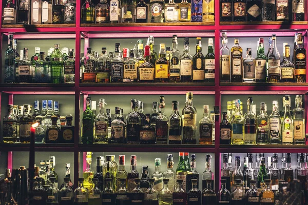
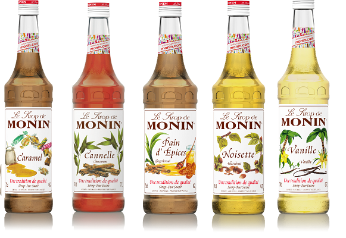
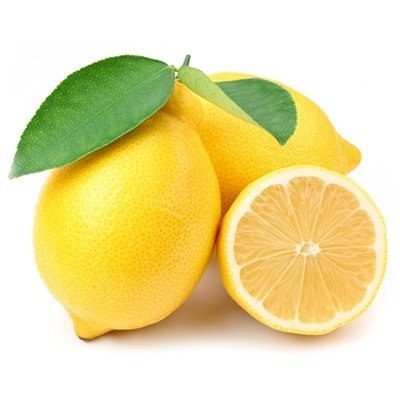
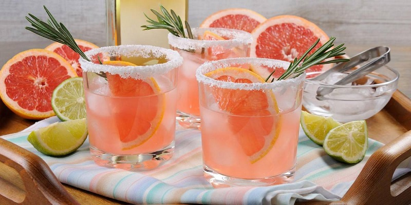

Гадаю що інколи багатьом з вас скучил звічайний віскі, чи ром з колою (чи ви по пиву?).
Отже вирішив як діючий бармен дати вам декілка способів смачно побухати. Почнемо.
Задля чого тобі готувати коктейі?
Дійсно, нащо тобі готувати коктейлі якщо поряд стоїть пляшка, келих та велике бажання скоріши випити.
Але давай трохи почикаємо і з'ясуємо нюанси. Ось декотрі з варіантів чому ти повинен приготувати коктейлі.
- Ти із друзями вирішили спробувати щось нове
- Ти запросив(ла) партнера на побачення та дуже хочеш його здивувати
- Надивився фільмів про бари а з дому виходити впадлу
- В твоєму селі місцевий бармен може намішати лише горілку із пивом
- Самогон що ви з кєнтами вкрали у діда Стьопи неможливо пити чистим
- На похід у бар нема грошів бо майже всі віддав за цей курс і вистачає лише на знижки в АТБ
Що обрати для коктейлів?
Алкогольна частина
Для початку треба розібратись з основою. Навряд ти читаєш тому що тобі просто кортить лимонаду, тому давай почнему з аклоголю.
Насправді для приготування коктейлів ти можешь використовувати абсолютно різний алкоголь - починая с вина і закінчуючи п'ятидесятирічним
Макалланом (але давай домовимось що таким ти займатись не будешь?!). І ще попрошу тебе не використовувати для коктейлів атифріз що тече
з радіатора твоєї брички, зимовий омивач що ти купив у епіцентрі по акції а він воняє так що користуватись їм неможливо.
Бензин чи соляру для того щоб всі розуміли в кого тут бабки теж не слід. Краще зупинимось на чомусь середньому - наприклад віскі, джин
чи ром.
Модифікатори

Тепер приступимо до модифікаторів. Що це? Це те що дає нашому коктейлю тіло та посилює самак. Найпростіше що можу
тобі запропонувати - це цукровий сироп (готувати дуже легко, просто змішуєш у кастрюлі цукор на воду 1 до 1, перемішуючи
нагріваєш до повного рочинення цукру. Потім дай остити та користуйся). Чи купи якись сироп у магазині (вибирай на свій
смак). Але якщо хочеш все натуральне то дуже лего просто перебити блендером ягоди чи вичавити сік з фруктів та додати
іх в твій цукровий сироп і трохи проварити (поті не забудь процідити). Ось щоб ти довго не думав які ягоди купляти:
- Малина - з нею дуже просто, вона добре поєднується майже з усім (особливо смачно із джином)
- Чорна смородина - також використовуй із джином, не програєш.
- Апельсин - дуже просто і буде дуже цитрусово
- Гранат - буду смачненько але чавити трошки довго.
Баланс

Кто б що не говорив, але найголовніше в коктейлі це баланс. Для того щоб якось сбалансувати солодку частину нам потрібно
або зось гірке, або щось кисленьке. Щоб балансувати гіркою частиною треба трохи вмінь та практики, тому ми з тобою обиремо
кислу частину. Що спадає на думку коли річ заходить про кислоти? Правильно, Лимон!
Останні штрихи

Останнє але не менш значиме - це прикраса (а якщо правильно то гарнирування) коктейлю. Не просто так в хороших
барах приділяють багато уваги тому як коктейль буде виглядати, тому що якщо ти дивишся на коктейль і тебе тягне
блювати - то наврядчи зробивши перший ковток ти будеш задоволений. І зовнішній вигляд ніби то хоче нам щось
розповісти, підготувати нас до того що саме ми отримаємо.
Дуже поглиблятися не буду, просто дам один лайфхак яким користуються майже усі початкові бартендери - прикрашай
коктейль тим що використовуєш у приготуванні (якщо використовував апельсин - відріж невелику скибку і додай її у келих)
Методи приготування коктейлів

Взагалі методів приготування коктейлів досить багато, але навряд чи в тебе в дома є потрібні інструменти, тому розберемо
3 основних методи що підійдуть в нашому випадку.
-
Метод білд: якщо просто, то ти всі інгридієнти (окрім гарніра) заливаєш у келих, додаєш лід, перемішуєш ложкою,
прикрашаєш та можеш пити -
Метод шейк: дадаєш усі коктейлі до шейкера, насипаєш лід, закриваєш шейкер, ретельно взбовтуєш та
переливаєш до келиха. Ще одне - якщо в тебе нема шейкера то можешь взяти півлітрову банку із крішкою та використовувати її. -
Метод бленд: дадай усі інгридієнти разом із льодом до блендера та взбий. Тільки довго не взбивай, спалиш блендер - я в тобі впевнен.